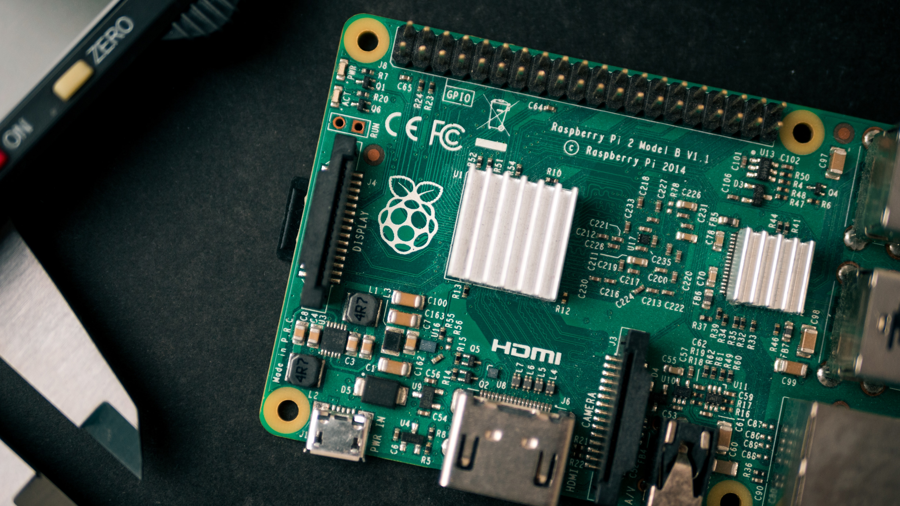

<!-- Two -->
<section id="two" class="wrapper alt style2">
	<section class="spotlight">
			<div class="image"></div>
			<div class="content">
				<a href="https://github.com/mLenehan1/ECE-FinalYearProject">
					<h2>Streaming Audio Server with Listener-Tracking<br />
						Embedded Clients (Final Year Project)</h2>
				</a>
				<p>The aim of this project was to impleent an audio server solution
					which could stream high quality audio across the network to a
					number of connected client devices.
				</p>
			</div>
		</section>
</section>